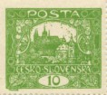
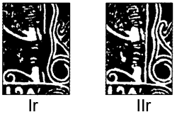
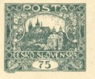
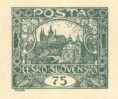
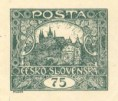
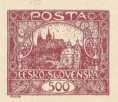

Tipos de marco (Ir / IIr)
En unas pocas posiciones del quinto dibujo encontramos el llamado tipo de marco. Se reconoce con facilidad — en la parte derecha del sello el marco es continuo, mientras que normalmente está interrumpido.
El marco continuo se originó por un retoque de la plancha de impresión y se designa IIr; el marco interrumpido es el tipo Ir. El tipo IIr aparece en total en solo cinco posiciones, en los valores 10h, 75h y 500h.

Posiciones
En total, 5 posiciones. Al pasar el ratón, la vista previa se enfoca; al hacer clic, el ejemplo se abre a pantalla completa.
55/I

1/I

2/I

21/I

93/I